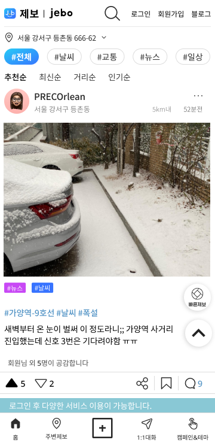

본 프로젝트에서 역할은 Product Design 총괄이었습니다. 시민이 위치 기반으로 생활 안전/편의 정보를 제보·공유하는 플랫폼을 설계했습니다.
#LBS
#Crowdsourcing
#Product Design
#UX Strategy
#Design System

Project Overview
The Challenge
배경 및 문제점
- 제보가 지도에 흩어져 맥락 파악이 어려움(중복/오정보 이슈)
- 가짜/홍보성 제보를 거르는 기준과 절차가 불명확
- 모바일 사용성(입력 피로, 이미지 용량, 위치 정확도) 이슈
The Solution
핵심 해결 방향
- 제보→검증→공유의 전 과정을 투명하게 보여주는 트러스트 디자인
- 커뮤니티 참여 유인을 위한 배지/레벨/기여도 피드백 체계
- Tools: Figma, Map SDK, Amplitude 이벤트 설계
Step 01
직관적인 제보 프로세스 (Step-Form)
복잡한 입력을 단계별로 쪼갠 스텝폼(Step-Form) UI와 위치 자동 보정으로, 현장에서 누구나 쉽고 정확하게 제보할 수 있습니다. 제보 카테고리와 위치 정확도를 일차 검증하는 스텝폼 설계.
Step 02
중복 제보 스마트 필터링 (Smart Filter)
이미 접수된 주변 제보를 자동으로 감지하고 제안하여, 불필요한 중복 접수를 막고 행정 효율을 높입니다. 유사 항목 제안으로 '이미 제보된 건입니다'를 안내하거나 유사 제보를 묶어줍니다.
Step 03
투명한 처리 과정 공유 (Live Status)
접수부터 해결까지 타임라인으로 확인하고, 나의 기여도에 따라 시민 배지를 획득하는 게이미피케이션 요소를 도입했습니다. 상태 뱃지(대기/검증중/공유중)와 기여도 메트릭 시각화.
The Impact — 주요 성과
High Validity
유효 제보율 대폭 상승. 지자체 협업 파일럿에서 사용자 참여와 유효 제보율 상승
Civic Engagement
시민 참여형 문제 해결 모델 구축. 도시 문제 해결형 크라우드소싱 모델의 참고 사례
Data Loop
운영 데이터 기반 품질 개선 선순환. 맵/카드/포털 컴포넌트 재사용으로 유지보수 비용 절감